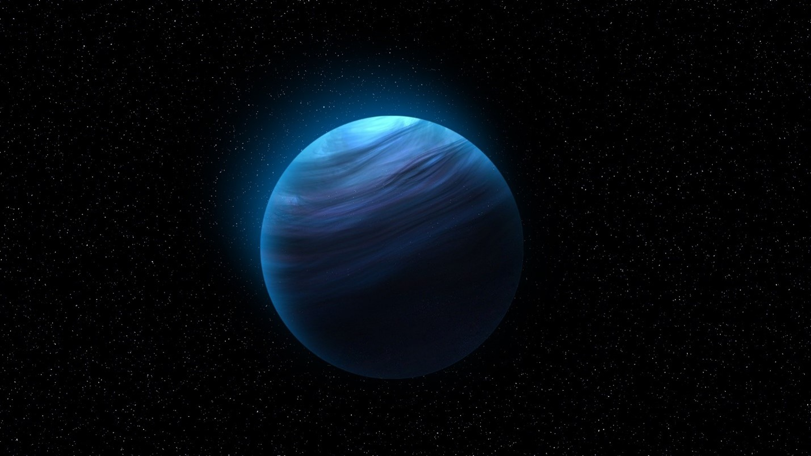

Нептун
Наконец, две самые далекие планеты: Нептун и Уран. Их называют ледяными гигантами, поскольку основная масса этих планет связана с веществом, которое могут образовывать льды. Это и просто вода, и метан, аммиак, углекислый газ. В планетной физике их традиционно относят ко льдам, потому что при низких температурах они могут в него превращаться. Уран и Нептун — плохо изученные планеты, потому что они находятся далеко от Земли. До сих пор не было создано никакого специализированного аппарата, который исследовал хотя бы одну из этих планет.
Вернуться на главную